AI (Object Detection ด้วย Xilinx DPU IP)
DPU (Deep Learning Processing Unit) ของ Xilinx เป็น IP สำหรับเร่งความเร็วการประมวลผลโครงข่ายประสาทเทียมแบบ CNN บน FPGA/SoC ผู้ใช้ไม่ต้องออกแบบ accelerator เอง เพียงนำโมเดลที่เทรนแล้วไป quantize และคอมไพล์ด้วยเครื่องมือของ Xilinx ก็สามารถรัน inference บนบอร์ดได้ บทความนี้จะพาไปทำตัวอย่างครบวงจรของการ ตรวจจับวัตถุด้วย YOLOv3 บน DPU ของบอร์ด Pynq-Z2 (Zynq-7000) ตั้งแต่สร้างฮาร์ดแวร์ใน Vivado, build Linux ด้วย Petalinux, แปลงและคอมไพล์โมเดล ไปจนถึงรันบนบอร์ดจริง
Environment ที่ใช้ทำการทดลองนี้:
| Tool | Version |
|---|---|
| Vivado | 2020.1 (บน Windows OS) |
| Petalinux | 2019.2 |
| Ubuntu | 18.04 (บน VMware 17.5.2) |
| Xilinx DNNDK | v3.1 (DECENT / DNNC / N2Cube) |
| YOLO | v3 (ตรวจจับวัตถุ รันบน Pynq-Z2) |
ภาพรวมขั้นตอน
DPU IP + Zynq] -->|.xsa| B[Petalinux
build Linux] B -->|BOOT.BIN, image.ub, rootfs| E[SD card] C[Darknet YOLOv3
.cfg + .weights] -->|convert| D[Keras .h5 → TensorFlow .pb] D -->|decent_q| F[Quantized .pb] F -->|dnnc + dcf| G[dpu_yolo.elf] G --> E E --> H[Pynq-Z2
รัน yolo_image]
1 DPU ของ Xilinx
1.1 การหา DPU IP ของ Xilinx
DPU IP รุ่นล่าสุดไม่รองรับ Zynq-7000 แล้ว แต่เวอร์ชันถึง 3.3 ยังรองรับ ครั้งนี้จะ implement บน Zynq-7000 จึงใช้เวอร์ชัน 3.0 DPU IP ที่รองรับ Zynq-7000 ซึ่งหา download แทบจะไม่ได้แล้ว (แต่มี DPU IP อยู่ใน zcu102-dpu-trd-2019-1-190809.zip ลิงก์ดาวน์โหลดอยู่ท้ายบทความ)
แตกไฟล์ zcu102-dpu-trd-2019-1-190809.zip จะมีโฟลเดอร์ชื่อ dpu_ip ใน zcu102-dpu-trd-2019-1-timer\pl\srcs ให้คัดลอกโฟลเดอร์ dpu_ip ทั้งโฟลเดอร์ไปไว้ที่ใดที่หนึ่ง ครั้งนี้วางไว้ที่ D:\xilinx\pynq_z2\AI\DPU\ip_repo
(โปรเจกต์ Vivado คือ D:\xilinx\pynq_z2\AI\DPU\Pynq-Z2_2020_1\pynqz2_dpu.xpr)
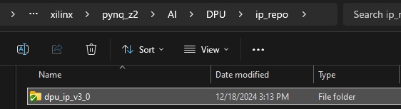
1.2 เพิ่ม DPU IP ลงใน IP Catalog
คลิก Add Repository ใน IP Catalog แล้วเพิ่ม dpu_ip
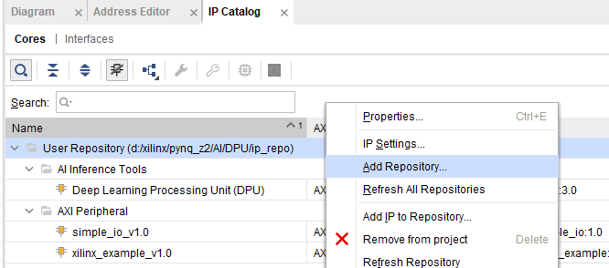
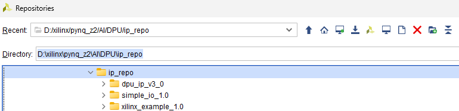
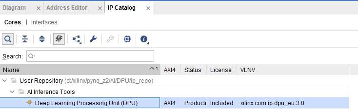
1.3 การ implement DPU IP
เปิด Block design แล้วใส่ DPU IP จากนั้นเชื่อมต่อกับ Zynq ดังภาพ
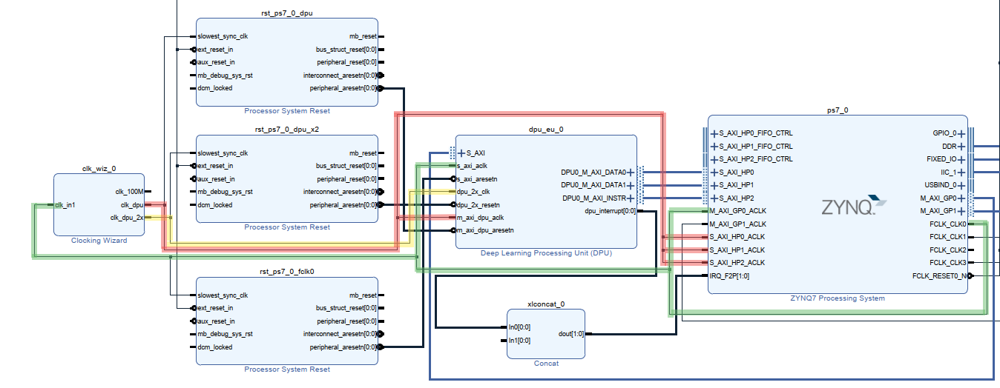
อินเทอร์เฟซของ DPU มีหลายพอร์ต:
| พอร์ต | หน้าที่ | เชื่อมต่อกับ |
|---|---|---|
S_AXI, s_axi_aclk |
ตั้งค่าการทำงานของ DPU (register) | AXI master ของ Zynq (M_AXI_GP) |
M_AXI_DATA0, M_AXI_DATA1, M_AXI_INSTR, m_axi_dpu_aclk |
DPU อ่าน/เขียนข้อมูลและคำสั่งกับหน่วยความจำ รวมถึงส่งออกผลการคำนวณ | AXI slave ของ Zynq (S_AXI_HP0~2) |
dpu_2x_clk |
ป้อนคล็อกที่เร็วเป็น 2 เท่าของ m_axi_dpu_aclk |
เอาต์พุตของ PLL |
dpu_interrupt |
เอาต์พุตอินเทอร์รัปต์ของ DPU | IRQ_F2P ของ Zynq |
Clock ที่ป้อนให้ DPU IP มี 3 ตัว:
| คล็อก | ใช้งาน | ความถี่ |
|---|---|---|
s_axi_aclk |
สื่อสาร Zynq → DPU | 100 MHz |
m_axi_dpu_aclk |
คำนวณของ DPU และสื่อสาร DPU → Zynq | 150 MHz |
dpu_2x_clk |
คำนวณของ DPU | 300 MHz |
150 MHz และ 300 MHz สร้างด้วย PLL แล้วป้อนให้ m_axi_dpu_aclk และ dpu_2x_clk
Note:dpu_2x_clkต้องเป็น 2 เท่าของm_axi_dpu_aclkเสมอ และควรมาจาก PLL ตัวเดียวกันเพื่อให้เฟสสัมพันธ์กัน
FPGA บนบอร์ด Pynq-Z2 มีจำนวนลอจิกน้อย เพื่อลดจำนวนการใช้ลอจิกของ DPU จึงเปลี่ยน Arch of DPU เป็น B1152
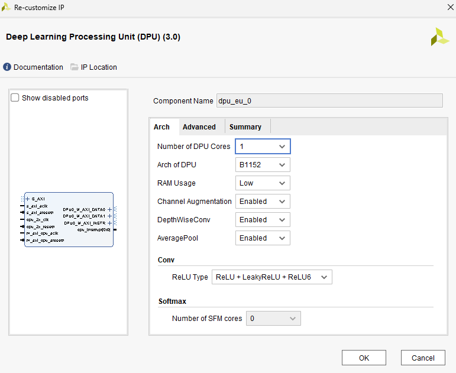
1.4 สร้างข้อมูลฮาร์ดแวร์ (.XSA)
เมื่อคอมไพล์โปรเจกต์ใน Vivado เสร็จ ให้ export ข้อมูลฮาร์ดแวร์ (.xsa) โดยคลิก File → Export → Export Hardware (เลือก Include bitstream)
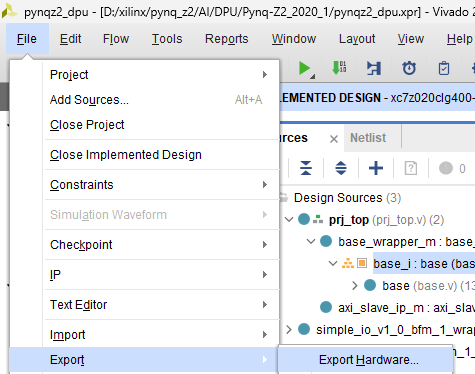
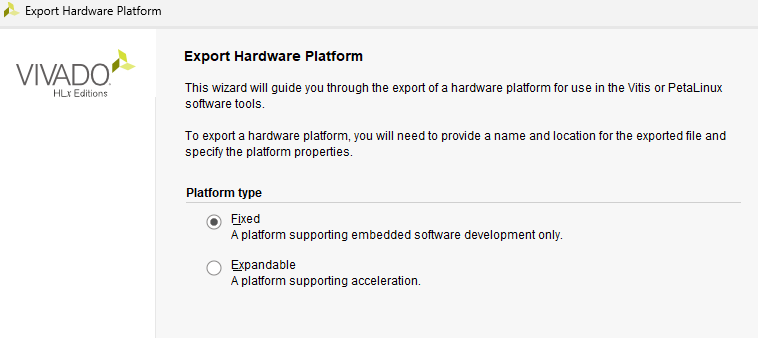
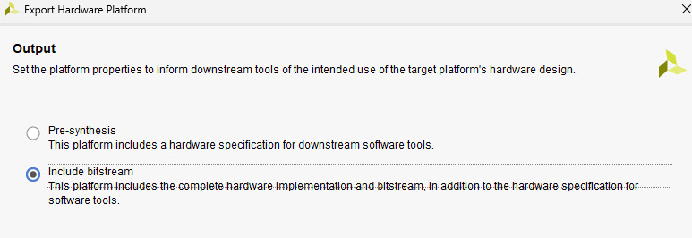
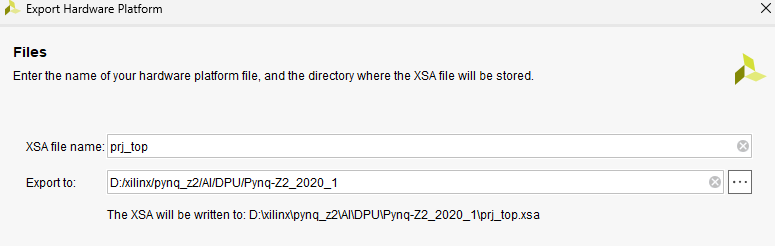
2 Petalinux สำหรับ DPU
2.1 เตรียมสภาพแวดล้อม
ติดตั้ง Petalinux 2019.2 บนเครื่อง Linux (Ubuntu) ครั้งนี้ใช้ Ubuntu 18.04 เริ่มจากติดตั้งแพ็กเกจที่จำเป็น
sudo apt update
sudo apt upgrade
sudo apt install htop vim openssh-server iproute2 gcc g++ net-tools libncurses5-dev zlib1g:i386 libssl-dev flex bison libselinux1 xterm autoconf libtool texinfo zlib1g-dev gcc-multilib build-essential screen pax gawk python3 python3-pexpect python3-pip python3-git python3-jinja2 xz-utils debianutils iputils-ping libegl1-mesa libsdl1.2-dev pylint3 cpio chrpath socat python
pip3 install --upgrade pip
sudo apt-get install tftp
sudo apt-get install tftpd-hpa
sudo apt-get install gparted2.2 ติดตั้ง Petalinux
mkdir ~/petalinux_2019
mv ~/Downloads/petalinux-v2019.2-final-installer.run ~/petalinux_2019/.
cd ~/petalinux_2019
chmod +x petalinux-v2019.2-final-installer.run
./petalinux-v2019.2-final-installer.run(กด [q] เพื่อปิดข้อความ license)
เปลี่ยน default shell ของระบบใน Ubuntu ให้ shell ที่ใช้รันสคริปต์เป็น bash แทน dash
chsh -s /bin/bash
# แล้ว reboot
sudo dpkg-reconfigure dash
# เลือก No2.3 การ build Linux
เตรียม Petalinux:
source ~/petalinux_2019/settings.shนำข้อมูลฮาร์ดแวร์เข้าไปแล้วสร้างโปรเจกต์ Petalinux:
cd ~/
petalinux-create --type project --template zynq --name pynqz2_dpu
cd pynqz2_dpu/
petalinux-config --get-hw-description=~/Desktop/Pynq-Z2_2020_1จากนั้นตั้งค่าดังต่อไปนี้:
- DTG Settings → Kernel Bootargs → ปิด (disable) "generate boot args automatically" แล้วใส่ค่าในช่อง "user set kernel bootargs" ดังนี้:
console=ttyPS0,115200 root=/dev/mmcblk0p2 rw earlyprintk quiet rootfstype=ext4 rootwait cma=256M - Image Packaging Configuration → Root filesystem type (SD card) → เลือก
EXT4 (SD/eMMC/SATA/USB)
2.3.1 เพิ่มการตั้งค่าที่จำเป็นเกี่ยวกับ DPU
คัดลอก recipe ของไดรเวอร์ DPU จาก zcu102-dpu-trd:
cp -rp ~/Downloads/zcu102-dpu-trd-2019-1-190809/zcu102-dpu-trd-2019-1-timer/apu/dpu_petalinux_bsp/xilinx-dpu-trd-zcu102-v2019.1/zcu102-dpu-trd-2019-1/project-spec/meta-user/recipes-modules project-spec/meta-userเพิ่มโมดูล dpu ใน rootfs config:
gedit project-spec/meta-user/conf/user-rootfsconfigCONFIG_dpugedit project-spec/meta-user/conf/petalinuxbsp.confIMAGE_INSTALL_append = "dpu"แก้ Device Tree:
gedit project-spec/meta-user/recipes-bsp/device-tree/files/system-user.dtsi/include/ "system-conf.dtsi"
&amba {
xlnk {
compatible = "xlnx,xlnk-1.0";
};
};
&amba {
dpu {
#address-cells = <1>;
#size-cells = <1>;
compatible = "xilinx,dpu";
base-addr = <0x4f000000>; //CHANGE THIS ACCORDING TO YOUR DESIGN
dpucore {
compatible = "xilinx,dpucore";
interrupt-parent = <&intc>;
interrupts = <0 29 4>; //CHANGE THIS ACCORDING TO YOUR DESIGN
core-num = <0x1>; //CHANGE THIS ACCORDING TO YOUR DESIGN
};
};
};
//usb device tree
/ {
usb_phy0: usb_phy@0 {
compatible = "ulpi-phy";
#phy-cells = <0>;
reg = <0xe0002000 0x1000>;
view-port = <0x0170>;
drv-vbus;
};
};
&usb0 {
dr_mode = "host";
usb-phy = <&usb_phy0>;
};Note: ค่า 3 จุดที่มีคอมเมนต์ "CHANGE THIS" ต้องให้ตรงกับการออกแบบฮาร์ดแวร์ของเรา
| ค่า | ต้องตรงกับ |
|---|---|
base-addr |
ที่อยู่ของ DPU ใน Address Editor ของ Vivado |
interrupts = <0 29 4> |
ช่อง IRQ_F2P ที่ต่อ dpu_interrupt ไว้ (ครั้งนี้คือหมายเลข 61 → 61 − 32 = 29) |
core-num |
จำนวนคอร์ DPU ในดีไซน์ (ครั้งนี้ 1 คอร์) |
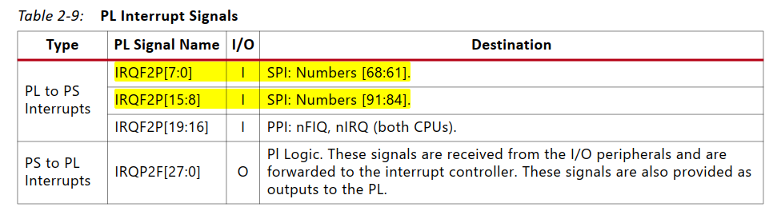
2.3.2 ตั้งค่า rootfs และ kernel
petalinux-config -c rootfsเลือกเมนูต่อไปนี้ให้ครบ:
| เมนู | รายการที่เปิด |
|---|---|
| modules | dpu |
| Filesystem Packages → admin | sudo, sudo-dev |
| Filesystem Packages → misc | packagegroup-petalinux-self-hosted |
| Petalinux Package Groups | packagegroup-petalinux-python-modules, -dev |
| Petalinux Package Groups | packagegroup-petalinux-x11, -dev |
| Filesystem Packages → console → utils → pkgconfig | pkgconfig, pkgconfig-dev |
| Filesystem Packages → libs → gtk+3 | gtk+3, gtk+3-demo, gtk+3-dev, gtk+3-dbg |
| Petalinux Package Groups → packagegroup-petalinux-opencv | opencv, opencv-dev |
จากนั้นตั้งค่า kernel:
petalinux-config -c kernelเปิด Device Drivers → USB support → [*] USB announce new devices แล้ว save
petalinux-build -c kernel -x finish(คำสั่งนี้ใช้จบขั้นตอนการตั้งค่า kernel) จากนั้นแก้ไฟล์ devtool-fragment.cfg
gedit project-spec/meta-user/recipes-kernel/linux/linux-xlnx/devtool-fragment.cfgลบข้อความเดิมออกทั้งหมด แล้ววางข้อความต่อไปนี้ (สำหรับให้รองรับกล้อง USB / USB host):
CONFIG_USB_OTG=y
# CONFIG_USB_OTG_FSM is not set
# CONFIG_USB_ZERO_HNPTEST is not set
CONFIG_MEDIA_USB_SUPPORT=y
CONFIG_USB_VIDEO_CLASS=y
CONFIG_USB_VIDEO_CLASS_INPUT_EVDEV=y
CONFIG_USB_GSPCA=m
CONFIG_V4L_PLATFORM_DRIVERS=y
CONFIG_VIDEO_ADV7604=y
CONFIG_USB_HID=y
CONFIG_USB_OHCI_LITTLE_ENDIAN=y
CONFIG_USB_SUPPORT=y
CONFIG_USB_COMMON=y
CONFIG_USB_ARCH_HAS_HCD=y
CONFIG_USB=y
CONFIG_USB_ANNOUNCE_NEW_DEVICES=y
CONFIG_USB_DEFAULT_PERSIST=y
CONFIG_USB_EHCI_HCD=y
CONFIG_USB_EHCI_ROOT_HUB_TT=y
CONFIG_USB_EHCI_PCI=y
CONFIG_USB_EHCI_HCD_PLATFORM=y
CONFIG_USB_ACM=m
CONFIG_USB_PRINTER=m
CONFIG_USB_WDM=m
CONFIG_USB_TMC=m
CONFIG_USB_STORAGE=y
CONFIG_USB_CHIPIDEA=y
CONFIG_USB_CHIPIDEA_OF=y
CONFIG_USB_CHIPIDEA_PCI=y
CONFIG_USB_CHIPIDEA_HOST=y
CONFIG_USB_PHY=y
CONFIG_NOP_USB_XCEIV=y
CONFIG_AM335X_CONTROL_USB=y
CONFIG_AM335X_PHY_USB=y
CONFIG_USB_GPIO_VBUS=y
CONFIG_USB_ULPI=y
CONFIG_USB_ULPI_VIEWPORT=y2.3.3 build Petalinux
petalinux-build
petalinux-package --boot --force --fsbl images/linux/zynq_fsbl.elf --fpga images/linux/*.bit --u-boot
petalinux-package --bsp -p ./ -o pynq-z2-dpu.bspไฟล์ที่ build ได้จะถูกส่งออกที่:
| ไฟล์ | หน้าที่ |
|---|---|
./images/linux/BOOT.BIN |
FSBL + bitstream + U-Boot |
./images/linux/image.ub |
Linux kernel + device tree |
./images/linux/rootfs.tar.gz |
Root filesystem |
Note: หาก BOOT.BIN ไม่ได้ฝัง bitstream ให้สร้าง BOOT.BIN ใหม่ด้วยวิธีต่อไปนี้ รัน petalinux-config แล้วตั้ง FPGA Manager → FPGA Manager เป็น Disable จากนั้น build Petalinux ใหม่ แล้วรัน:
petalinux-package --boot --force --fsbl images/linux/zynq_fsbl.elf --fpga images/linux/*.bit --u-boot(ตอน build จะมีข้อผิดพลาดขึ้น แต่ไม่ต้องสนใจก็ได้)
สถานะที่ BOOT.BIN ไม่ได้ฝัง bitstream:
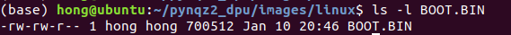
สถานะที่ BOOT.BIN ฝัง bitstream (ขนาดประมาณ system.bit + u-boot.bin):
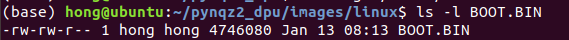
3 สร้าง YOLO ที่รันบน DPU ของ Xilinx
การรันโมเดลบน DPU ต้องแปลงโมเดลให้อยู่ในรูปแบบที่ DPU เข้าใจ (.elf) โดยมี 3 ขั้นตอนหลัก คือ แปลงโมเดล → quantize (float32 → int8) → compile ตามภาพด้านล่าง
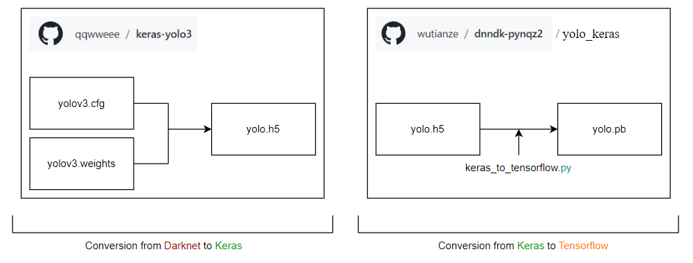
3.1 เตรียมสภาพแวดล้อม
ติดตั้ง Anaconda:
cd ~/
wget https://repo.anaconda.com/archive/Anaconda3-2020.02-Linux-x86_64.sh
bash Anaconda3-2020.02-Linux-x86_64.shจากนั้นรีสตาร์ตเครื่อง PC แล้วสร้าง environment สำหรับ DNNDK (ชื่อ decent):
conda create -n decent pip python=3.6
source activate decent
cd ~/Downloads/xilinx_dnndk_v3.1/host_x86/decent-tf/ubuntu18.04/
pip install ./tensorflow-1.12.0-cp36-cp36m-linux_x86_64.whl
pip install numpy opencv-python==4.6.0.66 scikit-learn==0.24.2 scipy progressbar2 keras==2.2.4
pip install pillow
pip install 'h5py==2.10.0' --force-reinstall
sudo apt install libgoogle-glog-dev
sudo apt-get install graphvizติดตั้ง DNNDK (ฝั่ง host) ต้องเพิ่ม PynqZ2 ลงในรายชื่อบอร์ดที่รองรับก่อน:
cd ~/Downloads/xilinx_dnndk_v3.1/host_x86
gedit install.shsupport_board=(ZCU102 ZCU104 ZedBoard Ultra96 PynqZ2)chmod +x install.sh
sudo ./install.sh PynqZ23.2 แปลงโมเดลเป็น TensorFlow (.pb)
3.2.1 แปลง Darknet → Keras
เข้าไปที่ https://pjreddie.com/darknet/yolo/ แล้วดาวน์โหลด yolov3.weights จากนั้นคัดลอกไปไว้ที่ ~/Desktop/YOLO-on-PYNQ-Z2/DNNDK/model_conversion
cd ~/Desktop/YOLO-on-PYNQ-Z2/DNNDK/model_conversion
python convert.py yolov3.cfg yolov3.weights ~/Desktop/YOLO-on-PYNQ-Z2/DNNDK/model_conversion/model_data/yolo.h53.2.2 แปลง Keras → TensorFlow
python keras_to_tensorflow.py --input_model=/home/hong/Desktop/YOLO-on-PYNQ-Z2/DNNDK/model_conversion/model_data/yolo.h5 --output_model=/home/hong/Desktop/YOLO-on-PYNQ-Z2/DNNDK/model_conversion/model_data/yolo.pb3.3 Quantization (การควอนไทซ์)
คัดลอก yolo.pb ไปยังโฟลเดอร์ quantization:
cp ./model_data/yolo.pb /home/hong/Desktop/YOLO-on-PYNQ-Z2/DNNDK/quantizationตรวจสอบชื่อ input/output ของเครือข่าย:
cd /home/hong/Desktop/YOLO-on-PYNQ-Z2/DNNDK/model_conversion
decent_q inspect --input_frozen_graph=model_data/yolo.pbจดเนื้อหาต่อไปนี้ไว้ (ใช้ภายหลัง):
Found 1 possible inputs: (name=input_1, type=float(1), shape=[?,?,?,3])
Found 3 possible outputs: (name=conv2d_59/BiasAdd, op=BiasAdd) (name=conv2d_67/BiasAdd, op=BiasAdd) (name=conv2d_75/BiasAdd, op=BiasAdd)3.3.1 เตรียม COCO dataset
ใช้สำหรับ calibration ตอน quantize ดาวน์โหลดจากเว็บไซต์ต่อไปนี้:
- http://images.cocodataset.org/zips/train2017.zip
- http://images.cocodataset.org/annotations/annotations_trainval2017.zip
สร้างไดเรกทอรีต่อไปนี้ แล้วแตกไฟล์ COCO dataset ที่ดาวน์โหลดมา:
mkdir /home/hong/Desktop/YOLO-on-PYNQ-Z2/DNNDK/quantization/yolo_datasetจากนั้นเปลี่ยนชื่อโฟลเดอร์ดังนี้:
| ชื่อเดิม | ชื่อใหม่ |
|---|---|
train2017 |
images |
annotations_trainval2017 |
labels |
3.3.2 แก้ไขสคริปต์
gedit /home/hong/Desktop/YOLO-on-PYNQ-Z2/DNNDK/quantization/graph_input_fn.pyเปลี่ยน path เป็น:
path = "/home/hong/Desktop/YOLO-on-PYNQ-Z2/DNNDK/quantization/yolo_dataset/images/"3.3.3 รัน Quantization
cd /home/hong/Desktop/YOLO-on-PYNQ-Z2/DNNDK/quantization
gedit quant.shใส่ชื่อ output ที่ตรวจสอบด้วย decent_q inspect ลงใน --output_nodes:
echo "###################"
echo "QUANTIZE"
echo "###################"
decent_q quantize \
--input_frozen_graph ./yolo.pb \
--input_nodes input_1 \
--input_shapes ?,416,416,3 \
--output_nodes "conv2d_59/BiasAdd,conv2d_67/BiasAdd,conv2d_75/BiasAdd" \
--method 1 \
--input_fn graph_input_fn.calib_input \
--gpu 0 \
--calib_iter 100chmod +x quant.sh
./quant.shผลลัพธ์ที่ควอนไทซ์แล้วจะถูกส่งออกที่ ~/Desktop/YOLO-on-PYNQ-Z2/DNNDK/quantization/quantize_results/ (มี quantize_eval_model.pb และ deploy_model.pb ขั้นตอนถัดไปใช้ deploy_model.pb)
3.4 คอมไพล์สำหรับ DPU
cd ~/Desktop/YOLO-on-PYNQ-Z2/DNNDK/quantization
cp ./quantize_results/deploy_model.pb /home/hong/Desktop/YOLO-on-PYNQ-Z2/DNNDK/compilation
cd /home/hong/Desktop/YOLO-on-PYNQ-Z2/DNNDK/compilationสร้างไฟล์ .dcf (ข้อมูล DPU configuration) จากไฟล์ .hwh ของ Vivado ด้วย dlet:
dlet -f ~/Desktop/Pynq-Z2_2020_1/pynqz2_dpu.srcs/sources_1/bd/base/hw_handoff/base.hwh
dlet -f ~/Desktop/Pynq-Z2_2020_1/pynqz2_dpu.srcs/sources_1/bd/base/hw_handoff/base.hwh /home/hong/Desktop/YOLO-on-PYNQ-Z2/DNNDK/compilation/pynq-z2.dcf -o
mv dpu-12181630-181630-202412181630-1630-30.dcf pynqz2_dpu.dcf
chmod 777 ~/Desktop/YOLO-on-PYNQ-Z2/DNNDK/compilation/pynqz2_dpu.dcfNote: ชื่อไฟล์.dcfที่ dlet สร้างขึ้นมีตัวเลขวันเวลาต่อท้าย ซึ่งจะต่างกันในแต่ละครั้ง ให้ตรวจชื่อจริงก่อนสั่งmv
จากนั้นคอมไพล์:
sh compile.shผลลัพธ์ที่คอมไพล์แล้วจะถูกส่งออกที่ตำแหน่งด้านล่าง (การคอมไพล์ใช้เวลานาน แม้ใน PC Core i5-13500 ที่ใช้ทดลองก็ใช้ประมาณ 12 ชั่วโมง):
(decent) hong@ubuntu:~/Desktop/YOLO-on-PYNQ-Z2/DNNDK/compilation/compile$ ls
dpu_yolo.elf yolo_kernel_graph.jpg yolo_kernel.info4 ทดสอบบนบอร์ดจริง
การทดสอบบนบอร์ดจริงต้องมีโปรแกรมฝั่งแอป แต่ครั้งนี้ใช้ตัวที่เตรียมไว้ในเอกสารอ้างอิง
4.1 สร้าง SD card
สร้างพาร์ทิชันด้วย gparted ดังนี้:
| พาร์ทิชัน | ฟอร์แมต | ใช้เก็บ |
|---|---|---|
| Partition 1 | FAT32 | BOOT.BIN, image.ub |
| Partition 2 | ext4 | Root filesystem (rootfs) |
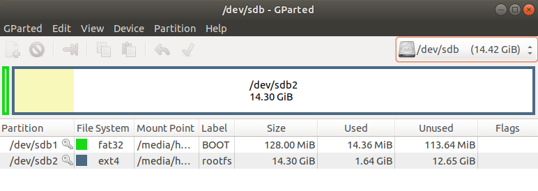
คัดลอก U-Boot, Linux ฯลฯ ลงใน SD card (ในที่นี้ SD card คือ /dev/sdb ให้ตรวจสอบชื่อ device ของเครื่องตัวเองก่อนเสมอ):
sudo mkdir /mnt/sdb1
sudo mkdir /mnt/sdb2
sudo mount /dev/sdb1 /mnt/sdb1
cd ~/pynqz2_dpu/images/linux/
sudo cp BOOT.BIN image.ub /mnt/sdb1/.
sudo umount /mnt/sdb1
sudo mount /dev/sdb2 /mnt/sdb2
sudo tar xzf rootfs.tar.gz -C /mnt/sdb2/
syncคัดลอก DNNDK ฝั่งบอร์ดไปไว้ใน home ของ root:
cd ~/Desktop/YOLO-on-PYNQ-Z2/DPU\ implementation/Petalinux/
sudo cp -vr ./zynq7020_dnndk_v3.1 /mnt/sdb2/home/root/
sync
sudo umount /mnt/sdb24.2 นำ YOLO ที่คอมไพล์เองไปแทนของเดิม
สิ่งที่เตรียมไว้ในเอกสารอ้างอิงมี .cpp, makefile ฯลฯ ใช้ตามนั้นได้เลย แต่เปลี่ยนเฉพาะ YOLO ที่คอมไพล์เองแทน:
cd ~/Desktop/YOLO-on-PYNQ-Z2/DNNDK/compilation/compile
cp dpu_yolo.elf ~/Desktop/YOLO-on-PYNQ-Z2/Deployment/yolo_pynqz2/model/.
cp yolo_kernel_graph.jpg ~/Desktop/YOLO-on-PYNQ-Z2/Deployment/yolo_pynqz2/info/.
cp yolo_kernel.info ~/Desktop/YOLO-on-PYNQ-Z2/Deployment/yolo_pynqz2/info/.4.3 บูตและตรวจสอบ DPU
เสียบ SD card เข้า Pynq-Z2 เปิดไฟ Pynq-Z2 แล้วรอจน Linux บูต ตรวจสอบว่า DPU ถูกฝังเข้าไปถูกต้องหรือไม่ ด้วยคำสั่ง devmem ถ้าอ่านค่าอะไรออกมาได้ก็ถือว่าใช้ได้ (รันบนบอร์ด Pynq-Z2):
Note: ถ้าdevmemค้างหรือ error ให้ตรวจbase-addrใน device tree ว่าตรงกับ Address Editor และ bitstream ถูกโหลดจริงหรือไม่ (ดูหัวข้อ BOOT.BIN ใน 2.3.3)
Login ด้วย MobaXterm โดย user คือ root และ pass คือ root:
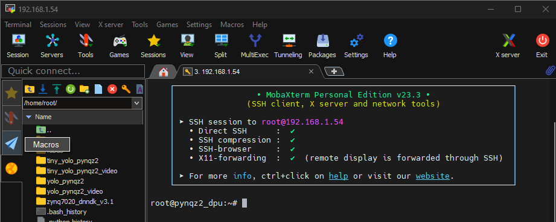
4.4 ติดตั้ง DNNDK บนบอร์ด
(รันบนบอร์ด Pynq-Z2)
root@pynqz2_dpu:~# cd zynq7020_dnndk_v3.1/
root@pynqz2_dpu:~/zynq7020_dnndk_v3.1# sh install.shคัดลอก cpp, makefile ฯลฯ (ทั้งโฟลเดอร์ yolo_pynqz2) ไปยังบอร์ด Pynq-Z2 (ลากแล้ววางได้ด้วย MobaXterm):
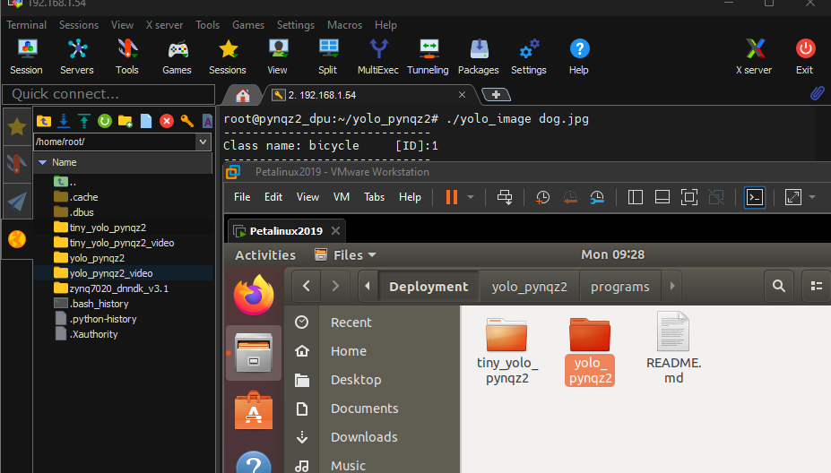
4.5 build แอปและรัน
(รันบนบอร์ด Pynq-Z2)
root@pynqz2_dpu:~/yolo_pynqz2# make
root@pynqz2_dpu:~/yolo_pynqz2# ./yolo_image dog.jpgถ้ารันสำเร็จ จะแสดงวัตถุที่ตรวจจับได้ดังภาพ:
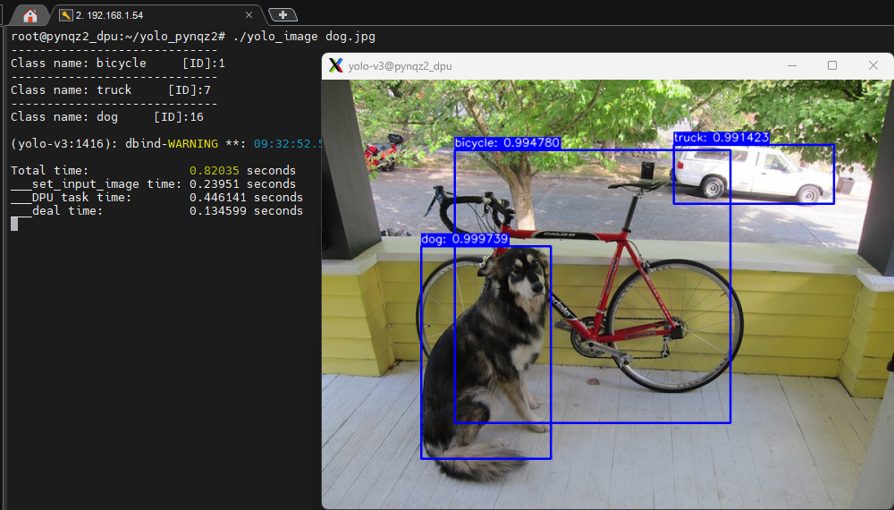
5 อ้างอิง
เอกสารอ้างอิง:
DPU IP รุ่นล่าสุดไม่รองรับ Zynq-7000 จึงไม่มีให้ดาวน์โหลดจากเว็บไซต์ Xilinx อีกต่อไป แต่สามารถดาวน์โหลดได้ที่ลิงก์ด้านล่าง: